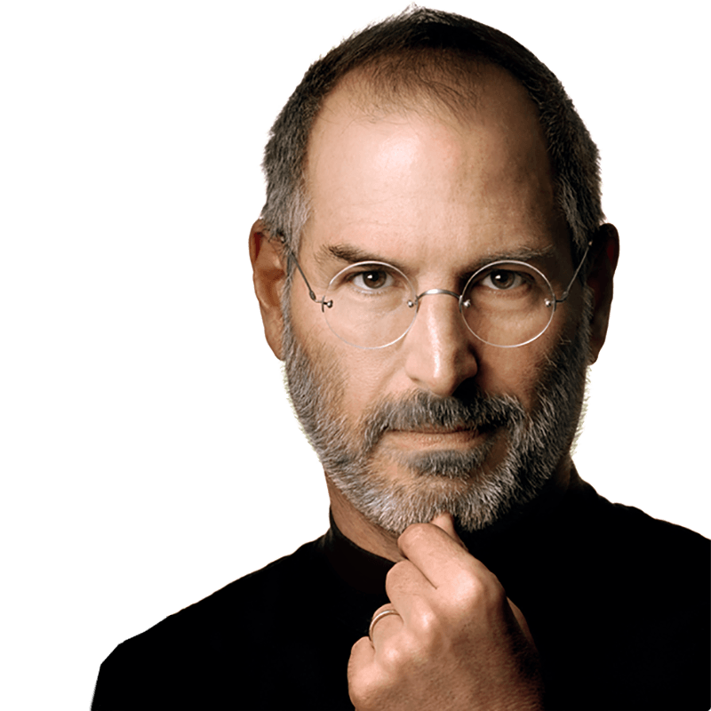

Christopher Latham Sholes
Tussen 1 Juli 1874 en 1 Juli 1875 heeft Christopher Latham Sholes het qwerty toetenbord bedacht en gerealiseerd zoals wij deze tot op de dag van vandaag nog gebruiken. Het idee dat Christopher Latham Sholes had bij het qwerty toetsenbord is dat de kans op het vastslaan van de hamertjes zo klein mogelijk was. Het vastslaan van hamertjes gebeurde als je twee toetsen in een zeer korte tijd na elkaar indrukte. Deze fout gebeurde met een qwerty toetsenbord minder vaak omdat de letters die na elkaar komen in een woord niet naast elkaar op het toetsenbord zitten.
July 1st, 1874
Steve Jobs
Steve Jobs was de CEO en founder van Apple, hij is overleden op October 5, 2011. Hij heeft net als Bill Gates een al bestaand concept van een GUI verder uitgewerkt. Hij had een eigen visie op hoe hij zijn GUI vormgaf en wat voor standaarden die moesten hebben. Apple heeft voor veel vernieuwingen gebracht. Tevens heeft hij ook Flash Player om zeep geholpen omdat hij van mening was dat alles moet werken zonder plugins.
April 1st, 1976
Tim Berners-Lee
p 6 augustus 1991 deed Tim Berners-Lee een proposal voor het world wide web. Hij zocht naar een manier om informatie efficiënt op de slaan en deze tevens makkelijk bereikbaar te maken voor een diverse doelgroep. Mike Sendall, de begeleider van Tim Berners-Lee schreef de tekst “Vague but interesting” en gaf Tim Berners‐Lee toestemming het verder uit te werken. Dit was het begin van het www zoals wij dat op de dag van vandaag gebruiken.

Augustus 6th, 1991
Brendan Eich
Brendan Eich is de bedenker en maker van Javascript zoals wij die nu gebruiken voor web development. Javascript ging eerst onder de naam Mocha en later onder de naam LiveScript In september 1995 is het officieel Javascript gaan heten. Javascript maakt het mogelijk om een website te laten veranderen zonder de webpagina te herladen. Dit was bruikbaar om websites interacties te maken, input en output te geven en feedback te geven aan de gebruiker.

May 1st, 1995
Larry Page and Sergey Brin
Larry Page en Sergey Brin zijn de oprichters van Google, de zoekmachine die bijna iedereen op de hele wereld gebruikt op de dag van vandaag. Google hebben de bedacht toen ze op de universiteit Stanfort zaten in californie. Google heette eerst BackRub, omdat het backlinks gebruikte om de nuttige waarde van een website in te schatten en deze zo te indexeren in de zoeklijst.
September 4th, 1998
Kevin Ashton
Kevin Ashton is de bedenker van de term 'Internet of Things'. Internet of things is dat alles om ons heen verbonden is aan het internet, zo weet je koelkast of je boodschappen moet doen, of je prullenbak geleegd moet worden en je wasrek of de was droog is.
February 1st, 1999
Elon Musk
Elon Musk is CEO van Tesla Motors en is koploper in investeren in innovatieve ideeen die onze toekomst bepalen. Het bekende automerk Tesla is een masterpiece als het aankomt op technology, parktisch gezien is een Tesla een computer op wielen.

July 1st, 2003
Mark Zuckerberg
Mark Zuckerberg is de oprichter van Facebook, een van de meest succesvolle social media platformen tot vandaag de dag. Net als Google was Facebook een project dat begon tijdens studententijd. Facebook ging aan het begin van 2004 onder de naam thefacebook met als adres www.thefacebook.com, een jaar later was het zo’n succes dat Mark stopte met studeren zodat hij facebook verder kon uitwerken.